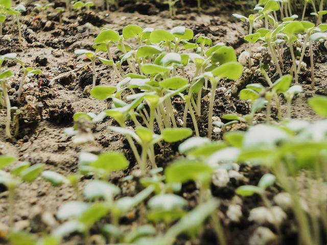
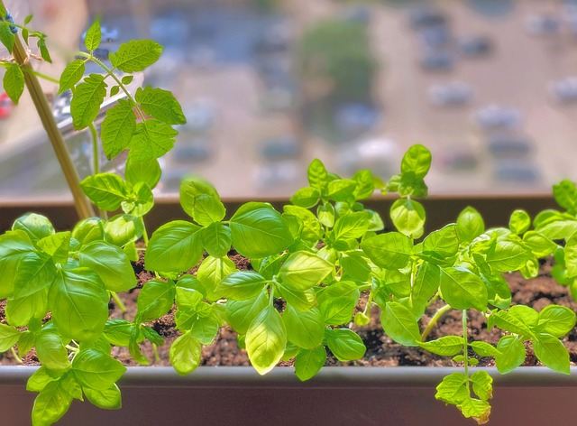
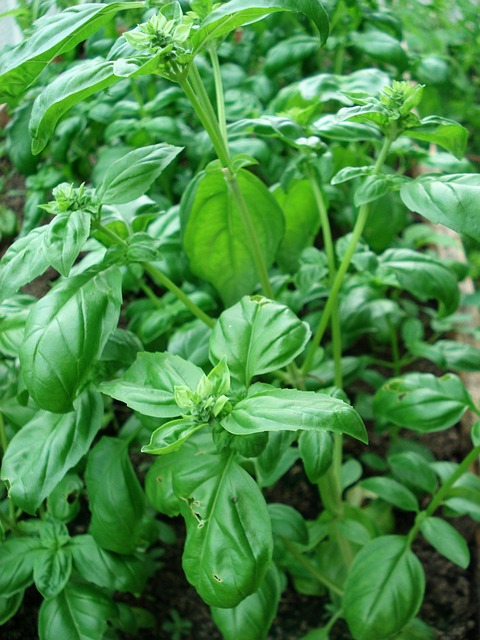

How To Grow Basil
Germinate

Basil seedlings sprouting Fill your desired pot with soil and add water until its completely moist. Place basil seeds directly on top about one inch apart. Basil seeds require light to germinate so avoid covering them with soil. Put the pot in a bright warm place for 1-2 weeks making sure to keep the soil slightly moistened.
Growing

Basil plant beginning to take form. Your basil should be sprouting at this point. You'll want to keep the soil nice and hydrated to maintain a happy basil plant. Eventually you will see pairs of shoots that branch off of the main stem.
Harvesting

Basil plant that is ready to prune and harvest. Once the basil is growing beyond the second set of shoots, you can clip the stem just above the node between the second set of shoots. The basil will then channel its energy to the two shoots beside the cut. This method promotes new growth and yields double the basil to harvest each time.